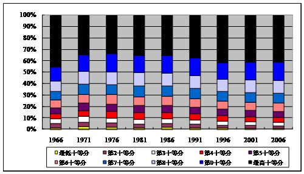

返回主页
图3：按照十等分划分的家庭收入分配，1966－2006年（单位：％）

(数据来源：1966-1991年数据来自Simon Xiaobin Zhao and Zhang Li, “Economic Growth and Income Inequality in Hong Kong: Trends and Explanations,” China: An International Journal, Vol. 3, No. 1 (March 2005), p. 82; 1996-2006的数据来自Dominic K T Leung, “Insights from Census Data on Income Distribution in Hong Kong,” a paper presented at the “24th Population Census Conference 2009,” March 25-27, 2009, Hong Kong, China, http://www.ancsdaap.org/cencon2009/Papers/Hong%20Kong/HongKong.D.Leung.pdf. )
图4：经济发展水平与收入分配
version:1.0; jobnet@188.com © retter2012.com